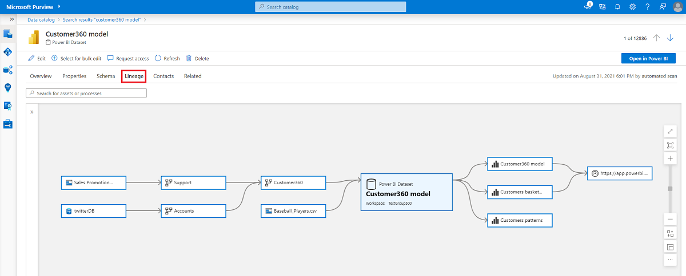
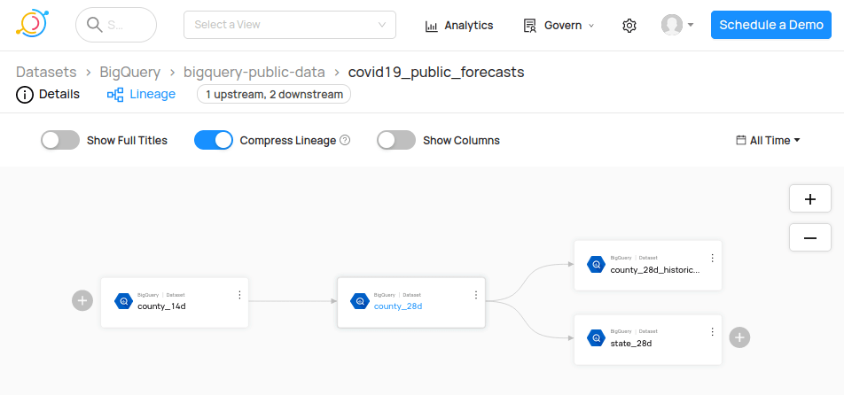
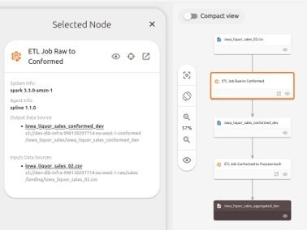
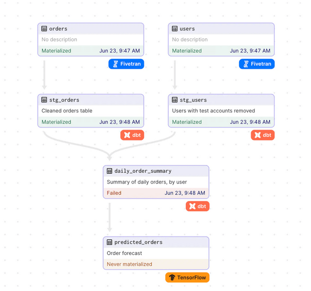

Introduction
In this article, we will delve into the often overlooked, but crucial aspect of data quality – data lineage. Data lineage records the flow of data and all the transformations throughout its lifecycle, from source to destination. Understanding data lineage is vital for maintaining data integrity and transparency in data processes, making it an essential component of the data quality workflow.
We have previously explored the significance of data quality in our blog post, “Introduction to Data Quality”, which emphasizes the importance of clean and standardized data for accurate analysis and decision-making. If you are interested in getting more hands-on experience with data quality testing, you can read our previous blog post, “Data Quality Testing with Deequ in Spark”.
Now, we will take a closer look at data lineage, its benefits, and how it contributes to maintaining data reliability. As a whole, we aim to compile a comprehensive overview of important concepts to guide a user who is considering on implementing data lineage within their organization.
The rest of the blog is structured as follows:
- What is Data Lineage?
- Requirements for Effective Data Lineage
- Benefits of Data Lineage
- Tools for Data Lineage
What is Data Lineage?
Traditionally, the data resided in a data warehouse with only a few connections to external systems. Today, the as the demand has grown, the data flows between a multitude of systems, teams, and (external) organizations. Consequently, it is easy to overlook the impact of a single change somewhere in the lifecycle of the data.
Data lineage refers to the steps a dataset took to reach its current state. It encompasses the entire lifecycle of data, from its creation or ingestion to its consumption and usage in various processes and applications. By understanding data lineage, organizations gain visibility into how data is transformed and manipulated as it moves through different systems, processes, and transformations. It is an important tool for data engineers to debug potential issues in the data flow processes.
There are two primary types of data lineage: table-level lineage and field-level lineage. Table-level lineage provides an overview of the tables or datasets involved in the data flow, whereas field-level lineage goes deeper, tracking the lineage of individual fields or columns within those tables.
Requirements for Effective Data Lineage
Data lineage is just like documentation, when done right, it shouldn’t put an additional burden on your development workflow, and in fact, should only enhance it. To harness the full potential of data lineage, there are some general guidelines that should be satisfied as described in Data Quality Fundamentals book by Moses, et al.:
- Fast Time to Value: Abstracting the relationships between data objects down to the field level is crucial for quick remediation. Simply tracking at the table level may be too broad and insufficient for understanding the impact of changes and identifying specific issues. (split point)
- Secure by Design: Data lineage shouldn’t directly access the data. Instead, it should rely on metadata, logs, and queries to gather information about the data flow. This simplifies the design as well ensures that no potentially private business data leaks into your documentation.
- Automation: Manual maintenance of data lineage becomes increasingly challenging and error-prone as data pipelines become more complex. Investing in an automated data lineage generation approach saves time and reduces the risk of human error.
- Integration with Popular Data Tools: A data project typically orchestrates data flow between multiple tools. The lineage tracking should seamlessly integrate with these technologies to create a unified view of your business, rather than dictating your workflow.
Benefits of Data Lineage
Implementing robust data lineage practices offers several benefits to organizations:
- Communication and Transparency: Data lineage acts as a communication channel between data producers and data consumers. It helps bridge the gap between different teams by providing a clear understanding of the impact of broken or changed data on downstream consumers.
- Improved Data Quality and Trust: Data lineage allows organizations to build trust in their data assets. By providing visibility into the data’s journey and transformation, it enhances data quality, reliability, and accuracy. This, in turn, promotes better decision-making based on trustworthy information.
- Compliance and Auditability: Data lineage supports compliance efforts by enabling organizations to demonstrate adherence to regulations, such as the General Data Protection Regulation (GDPR). It provides an audit trail of data usage and ensures transparency in data management practices.
Some practical applications of data lineage in use include:
- Debugging: When issues arise in data analysis or reporting, data lineage can be invaluable for root cause analysis. By tracing the lineage of problematic data, analysts can identify where the issue originated and take corrective action more efficiently.
- Reducing Technical Debt: Data lineage helps identify columns or fields that are no longer in use or have been deprecated. By marking and propagating these changes downstream, organizations can reduce technical debt and streamline their data pipelines.
- Governance: With privacy regulations and data governance becoming increasingly important, data lineage provides a way to track how personally identifiable information (PII) is used within an organization. It enables organizations to understand who has access to sensitive data, how it is utilized, and ensures compliance with data protection regulations.
Tools for Data Lineage
Now, let’s explore some powerful tools that can help you establish and maintain a seamless data lineage process.
OpenLineage
OpenLineage is an emerging industry standard for data lineage tracking that is gaining traction. It is supported by the Linux Foundation, Atronomer, Collibra. It aims to establish a unified framework for capturing, managing, and sharing data lineage metadata across various tools and platforms. OpenLineage provides a consistent way to represent data lineage, making it easier to integrate with different systems and tools. You can easily incorporate it with any tool by submitting events to its API endpoint.
One exciting integration with OpenLineage is the combination with Marquez, a metadata service that tracks data workflows and lineage, open-sourced by WeWork. Together, they offer a simple, yet powerful solution to maintain a comprehensive and standardized view of data lineage. With this integration, you can easily trace data transformations, dependencies, and the origin of data through various data pipelines.
Microsoft Purview
Microsoft Purview is a comprehensive data governance and data cataloging solution that also offers data lineage capabilities. Purview is part of the Microsoft Azure ecosystem and integrates well with other Azure services. It allows organizations to discover, classify, and understand their data assets, making it easier to implement robust data lineage practices.
One notable feature of Purview is its integration with Azure Data Factory (ADF). While ADF provides some level of data lineage tracking through job dependencies, Purview enhances this functionality by offering a more unified and visual representation of data lineage across the data ecosystem.

Data Lineage in Microsoft PurviewDatahub
Datahub is a versatile data platform that provides robust data lineage capabilities, among other features. It offers extensive integration support, making it suitable for various data environments. While it is open source, the installation is quite heavy and requires both Kafka and Elasticsearch to operate, making it a tough choice for small projects.
Datahub can handle large-scale data lineage requirements. Data engineers and data analysts can rely on Datahub to trace data paths, identify data inconsistencies, and ensure data quality across their pipelines, making it a one-stop shop data quality tool.

Dataset Lineage overview in DataHubSpline
If your organization mainly utilizes Apache Spark for data processing, Spline is an excellent tool to consider for data lineage tracking. Spline offers the ability to join lineage across multiple datasets, providing a comprehensive view of how data transformations take place.
One notable advantage of Spline is its compatibility with OpenLineage (currently as POC). This allows you to leverage OpenLineage’s ecosystem to combine lineage across environments for visualization.

Dataset High Level Data Lineage overview in Spline UIDBT (Data Build Tool) and Dagster
DBT and Dagster are two powerful data tools that emphasize data-first practices and can significantly contribute to your data lineage efforts.
DBT is a popular data transformation tool that enables data engineers and analysts to model, transform, and organize data in a structured manner. By leveraging DBT’s features, you can ensure that your data lineage accurately reflects data transformations and helps maintain data integrity.
On the other hand, Dagster is a data orchestration tool designed to facilitate the development and management of data workflows. With Dagster, you can build robust data pipelines that capture data lineage effectively, making it easier to identify and resolve issues in your data processes.

Data Graph in Dagster Combining FiveTran, DBT and Tensorflow AssetsApache Airflow
Apache Airflow is a widely used workflow management platform that, while not a strict data lineage tool, supports data lineage indirectly through its connectors and integrations. By utilizing these connectors, you can associate data pipelines with metadata about the data sources, dependencies, and transformations.
While Airflow’s data lineage capabilities might not be as sophisticated as some dedicated data lineage tools, it can still play a significant role in providing visibility into your data workflows and their impact on downstream processes.
Conclusion
In conclusion, data lineage is a vital aspect of data quality, providing transparency in data processes and transformations. Building your lineage with best practices in mind, such as automation and the correct level of abstraction, brings a multitude of benefits like improved communication, enhanced data quality, and compliance support.
Powerful tools are available for establishing and maintaining data lineage, offering unified frameworks for metadata management and comprehensive tracking across workflows.
Embracing data lineage and leveraging these tools empowers everyone within the organization to make better decisions, ensure data reliability, and build trust in their data.